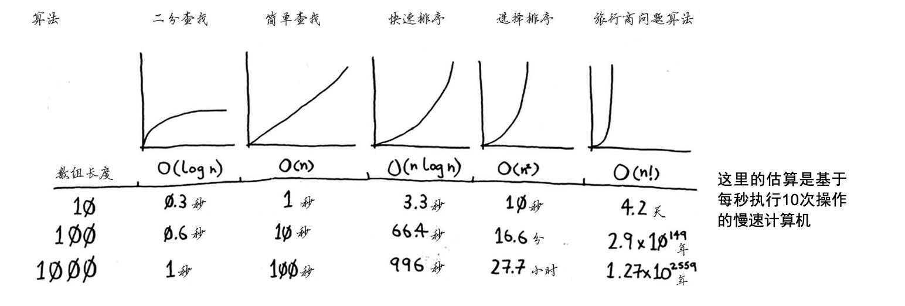

分而治之（divide and conquer，D&C）- 种著名的递归式问题解决方法
4.1 分而治之 练习1: 有一块 1680 x 640 的土地，将它等分成一个个正方形，那么正方形面积最大时，边长为多少？
解决方案，根据 欧几里得 算法，我们先将长方形分解成 640x640 + 640x640 + 640x400，然后再将 640x400 的长方形按照同样的方式分解，到最后分解为正方形时就是我们要的答案了
1 2 3 4 5 6 7 8 def getSquar (length, width ): if length%width == 0 : return width else : return getSquar(width, length%width) getSquar(1680 , 640 )
重申一下D&C的工作原理：
找出简单的基线条件
确定如何缩小问题的规模，使其符合基线条件
练习2: 使用 D&C 的思路计算一个数组的和, sum = first + sum(sec…end)
1 2 3 4 5 6 7 8 list = [sub for sub in range(1 , 10 )] def sum (list ): if list: return list[0 ] + sum(list[1 :]) return 0 sum(list)
快速排序 练习：准备一个无序数组，使用快排重新排序
快排原理：随机从数组中选择一个数作为基准，然后将数组分为 大于基准的数 + 基准 + 小于基准的数，在按照同样的思路对两堆数进行同样的排序，直到堆的 len < 2 为止排序结束
1 2 3 4 5 6 7 8 9 10 11 12 13 list = random.sample(range(0 , 100 ), 10 ) def qsort (list ): if len(list) > 2 : pivot = list[0 ] small_partition = [sub for sub in list[1 :] if sub < pivot] big_partition = [sub for sub in list[1 :] if sub >= pivot] return qsort(small_partition) + [pivot] + qsort(big_partition) return list
4.3 再谈大O表示法 常见大O运行时间

4.3.2 平均情况和最糟情况 当最糟情况时，n 个元素的数组，每层分析 n 次，栈深为 n, O(n) x O(n) = O(n2 )
平均情况时，n 个元素的数组，每层分析 n 次，栈深为 logn , 时间复杂度为 O(n) x O(logn ) = O(nlogn )
Java 中的快排实现 Java 中快排的实现思路和 Python 中的是一样的，但是可能由于语法支持上的不同，感觉上，Java 的实现要比 Python 的实现复杂了很多
示例说明：
以第一个元素为基准，先遍历一遍数组将数组分为 [小于等于 pivot] + [pivot] + [大于 pivot] 三部分, 然后再对大于和小于的两部分做同样的算法
参考 CSDN 讲解的很详细，难点集中在分组的算法上，这里使用的是 挖坑法。
那数组的第一个元素作为 pivot，分别记录起止点下标i，j. 先从右向左找小于 pivot的元素, 找到了就和 i 做交换。然后从左向右找大于 pivot的元素，和j 做交换，知道 i >= j结束。
完了将 pivot 的值赋给 i 位置。这个时候 i 和 j 是相等的。经过这一次遍历，数组被分为以 pivot 为界的两个自数组，元素分别小于和大于 pivot。
PS: 必须先从右向左扫描，不然我们就丢失了 j 的初始值引用了
1 2 3 4 5 6 7 8 9 10 11 12 13 14 15 16 17 18 19 20 21 22 23 24 25 26 27 28 29 30 31 32 33 34 35 36 37 38 39 40 41 42 43 44 45 46 47 48 49 50 import java.util.Arrays;import java.util.Random;public class QuickSortDemo public static void main (String[] args) int [] sample = new Random().ints(0 , 100 ).limit(10 ).toArray(); System.out.println("Origin: " + Arrays.toString(sample)); qsort(sample, 0 , sample.length - 1 ); System.out.println("After: " + Arrays.toString(sample)); } private static void qsort (int [] arr, int start, int end) if (start >= end) { return ; } int pivot_index = partition(arr, start, end); qsort(arr, start, pivot_index - 1 ); qsort(arr, pivot_index + 1 , end); } private static int partition (int [] arr, int start, int end) int pivot = arr[start]; int i = start, j = end; while (i < j) { while (arr[j] > pivot && i < j) { j--; } arr[i] = arr[j]; while (arr[i] <= pivot && i < j) { i++; } arr[j] = arr[i]; } arr[i] = pivot; return i; } }
Arrays.sort 实现 Arrays 在进行 sort 排序的时候可能会采用 插入排序，双轴快排 或 归并排序。具体判断流出如下
1 2 3 4 5 6 7 8 9 10 11 12 13 14 15 16 17 18 19 20 21 22 23 24 25 26 27 28 29 30 31 +--------------+ | Arrays.sort()| +--------------+ | | | | v +-------------+ N +----------------------------+ |length < 286 |---------------> | check if arr nearly sorted | +-------------+ +----------------------------+ | N | |<--------------------------------------| | | v | +-------------+ N | |length < 47 |-------------- |Y +-------------+ | | | | | |Y | | | | | v v v +----------------+ +------------+ +------------+ | insertion sort | | quick sort | | merge sort | +----------------+ +------------+ +------------+ | | | | | | v | | +-------------+ | | | finish sort | <------------------------------ +-------------+